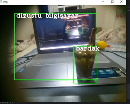

BİR ŞEYLERİ TANIMAK
Bu kod, önceden eğitilmiş bir algoritma kullanarak nesneleri tanır . İlgili kütüphaneleri ve kaynakları içe aktarın: cv2: OpenCV kütüphanesini kullanır. Kamera akışını almak için cv2.VideoCapture kullanılır. Nesne sınıflarının isimlerini ve modelin konfigürasyonunu içeren dosyaları içe aktarır.
Geri Dön